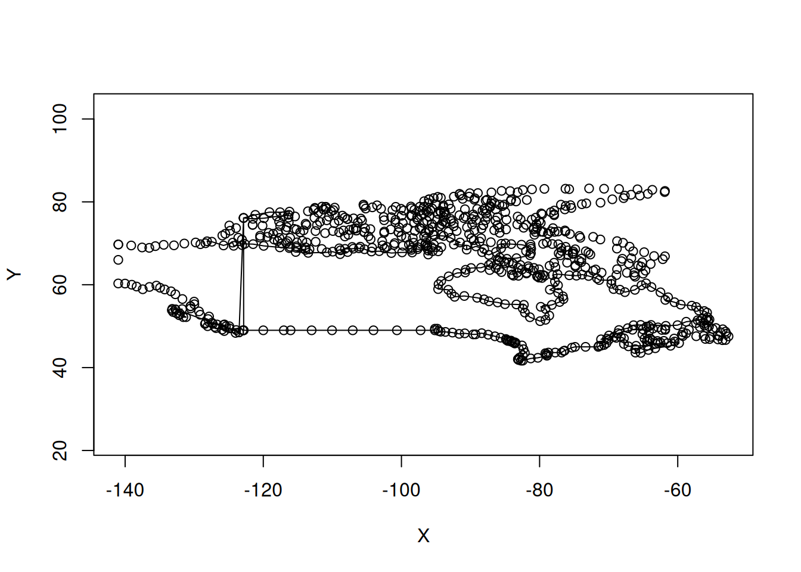
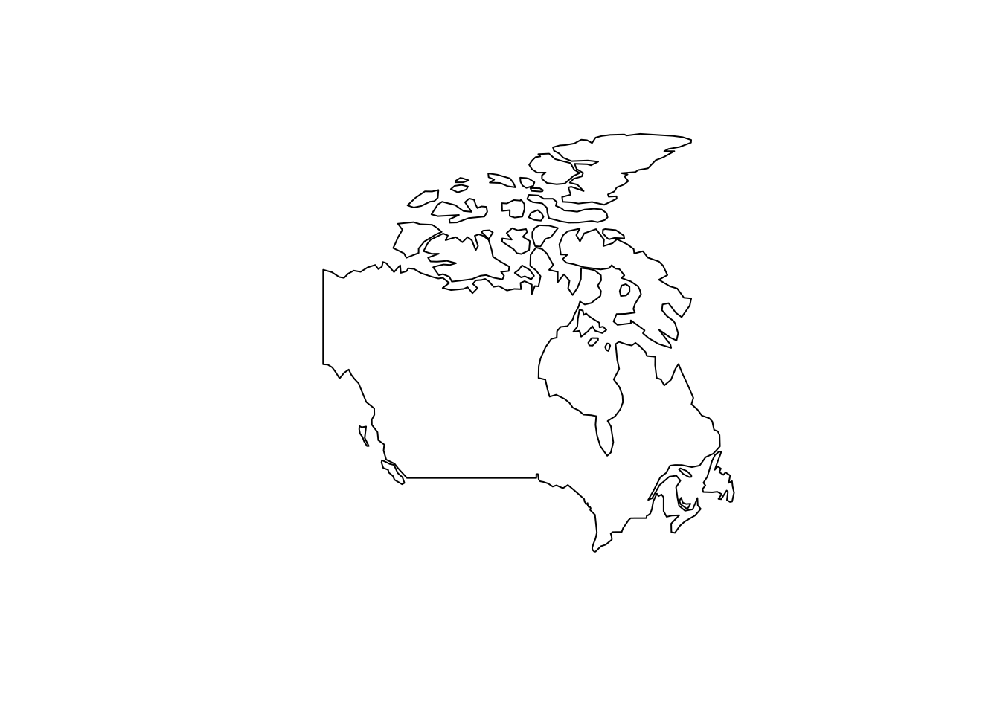
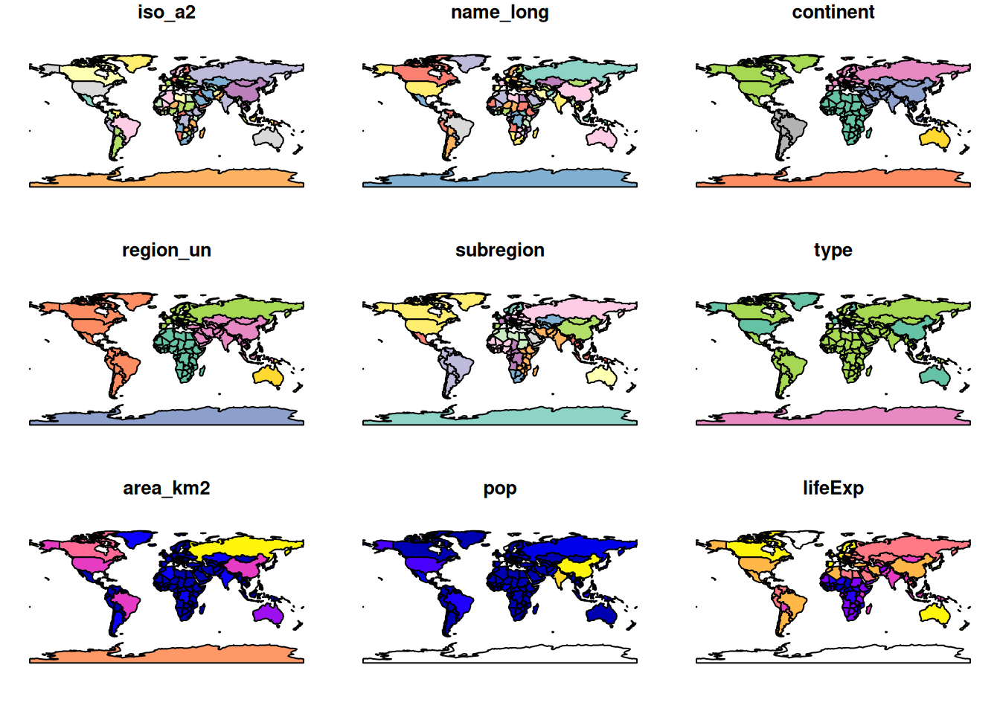
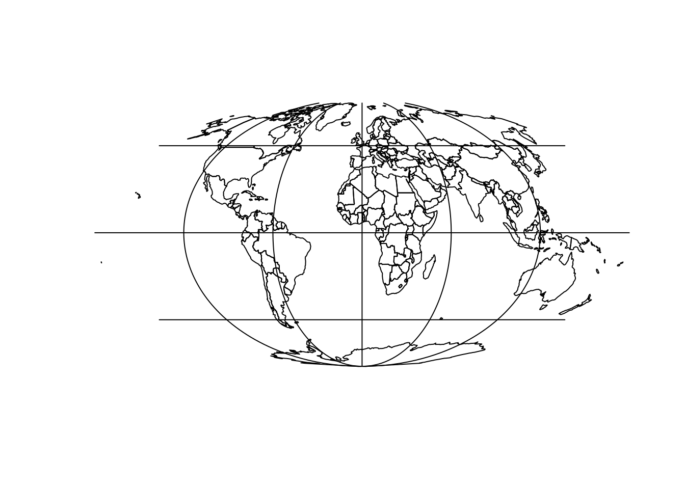
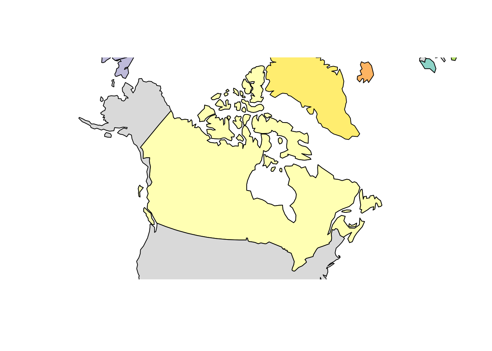
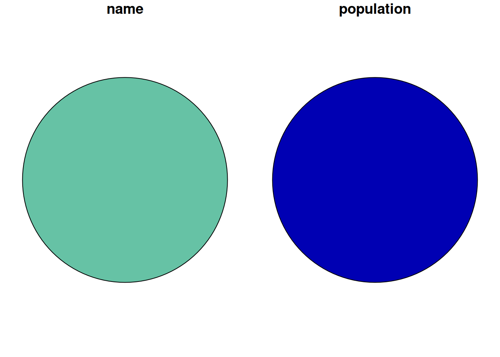
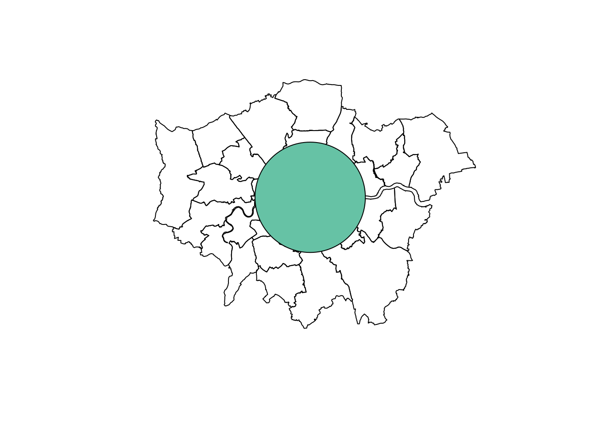

library(sf)
library(dplyr)
library(spData)Geographic projections and transformations
vignette
rstats
Introduction
This workbook outlines key concepts and functions related to map projections — also referred to as coordinate reference systems (CRSs) — and transformation of geographic data from one projection to another. It is based on the open source book Geocomputation with R, and Chapter 6 in particular.
It was developed for the ‘CASA Summer School’, or the Doctoral Summer School for Advanced Spatial Modelling: Skills Workshop and Hackathon, 21st to 23rd August 2019, for its full name! It should be of use to anyone interested in projections, beyond the summer school, so we posted it on our newly updated website for maximum benefit.
Prerequisites
Before you get started, make sure you have the packages installed:
Introduction
Before we get started, why use R for geographic data?
Simple answer: because it works, excels at spatial statistics and visualisation and has a huge user community.
It can be used for a wide range of things such as:
- Book on Geocomputation: https://geocompr.robinlovelace.net/
- Propensity to Cycle Tool: https://pct.bike/
Geographic data relies on a frame of reference. There are two main types of CRS:
- Geographic, where the frame of reference is the globe and how many degrees north or east from the position (0, 0) you are
- Projected, where the frame of reference is a flat representation of part of the Earth’s surface


TLDR
The ‘too long didn’t read’ (TLDR) take away messages from this text are:
- Be aware of projections
- Decide an appropriate CRS for your project and ensure everything is in that CRS
- Use a projected CRS when doing geometric operations
- EPSG codes such as 27700 and 4326 refer to specific coordinate systems
- It is worth checking if there is an officially supported projection for the region — that is often a good option
In R, you can check, set and transform CRS with st_crs() and st_transform() as follows:
zones_london = lnd
st_crs(zones_london) # find out the CRS
#> Coordinate Reference System:
#> User input: EPSG:4326
#> wkt:
#> GEOGCS["WGS 84",
#> DATUM["WGS_1984",
#> SPHEROID["WGS 84",6378137,298.257223563,
#> AUTHORITY["EPSG","7030"]],
#> AUTHORITY["EPSG","6326"]],
#> PRIMEM["Greenwich",0,
#> AUTHORITY["EPSG","8901"]],
#> UNIT["degree",0.0174532925199433,
#> AUTHORITY["EPSG","9122"]],
#> AUTHORITY["EPSG","4326"]]
zones_london_projected = st_transform(zones_london, 27700) # transform CRS
st_crs(zones_london) = NA # set CRS
st_crs(zones_london) = 4326 # set CRSIf you ignore CRSs, bad things can happen.
Why are projections needed?
Without a coordinate system, we have no context:

Which country is it?
Location on Earth is measured in degrees so, even when axes are equal, maps are highly distorted representations of reality far from the equator:

Along which axis is the image over-represented?
Even when we compensate for this, the cylindrical projection is misleading:

By default, most software (including R) plots data with geographic lon/lat coordinates a cylindrical projection, leading to maps like this:
plot(canada$geom)
plot(world)
#> Warning: plotting the first 9 out of 10 attributes; use max.plot = 10 to plot
#> all
Across the whole world, the results look like this:
plot(st_geometry(world), col = "grey")
There is no single ‘correct’ CRS that can represent everywhere well: it is physically impossible to ‘peal’ the surface of the Earth onto a flat screen (credit: Awar Jahfar):

At best we can comply with two out of three spatial properties (distance, area, direction). Therefore, the task at hand determines which projection to choose. For instance, if we are interested in a density (points per grid cell or inhabitants per grid cell), we should use an equal-area projection.
- There is also a fourth property, shape.
Which projection to use?
A range of CRSs is available:
- A Lambert azimuthal equal-area (LAEA) projection for a custom local projection (set
lon_0andlat_0to the center of the study area), which is an equal-area projection at all locations but distorts shapes beyond thousands of kilometers. - Azimuthal equidistant (AEQD) projections for a specifically accurate straight-line distance between a point and the center point of the local projection.
- Lambert conformal conic (LCC) projections for regions covering thousands of kilometers, with the cone set to keep distance and area properties reasonable between the secant lines.
- Stereographic (STERE) projections for polar regions, but taking care not to rely on area and distance calculations thousands of kilometers from the center.
This is how it works in R:
world_laea1_g = world %>%
st_transform("+proj=laea +x_0=0 +y_0=0 +lon_0=0 +lat_0=0") %>%
st_geometry()
plot(world_laea1_g)
world %>%
st_transform("+proj=aeqd +x_0=0 +y_0=0 +lon_0=0 +lat_0=0") %>%
st_geometry() %>%
plot()
world %>%
st_transform("+proj=moll") %>%
st_geometry() %>%
plot()
How to add graticules?
world %>%
st_transform("+proj=moll") %>%
st_geometry() %>%
plot()
g = st_graticule(x = world) %>%
st_transform("+proj=moll") %>%
st_geometry()
plot(g, add = TRUE)
canada_centroid = st_coordinates(st_centroid(canada))
#> Warning in st_centroid.sf(canada): st_centroid assumes attributes are constant
#> over geometries of x
canada_laea_crs = paste0("+proj=laea +x_0=0 +y_0=0 +lon_0=",
canada_centroid[1],
" +lat_0=",
canada_centroid[2])
canada_laea = st_transform(canada, crs = canada_laea_crs)
world_laea = st_transform(world, crs = canada_laea_crs)
plot(st_geometry(canada_laea))
plot(world_laea, add = TRUE)
#> Warning in plot.sf(world_laea, add = TRUE): ignoring all but the first attribute
canada_centroid = st_coordinates(st_centroid(canada))
#> Warning in st_centroid.sf(canada): st_centroid assumes attributes are constant
#> over geometries of x
canada_laea_crs = paste0("+proj=laea +x_0=0 +y_0=0 +lon_0=",
canada_centroid[1],
" +lat_0=",
canada_centroid[2])
canada_laea = st_transform(canada, crs = canada_laea_crs)
world_laea = st_transform(world, crs = canada_laea_crs)
plot(st_geometry(canada_laea))
plot(world_laea, add = TRUE)
#> Warning in plot.sf(world_laea, add = TRUE): ignoring all but the first attribute
EPSG codes
EPSG codes are standard codes for projections. See them in R with:
epsg_codes = rgdal::make_EPSG()
# View(epsg_codes) # open in interactive spreadsheetIn the UK, the EPSG code of official data is 27700.
Geographic data in R
london_df = data.frame(name = "london", population = 1e7,
lon = -0.1, lat = 51.5)
class(london_df)
#> [1] "data.frame"
london = st_as_sf(london_df, coords = c("lon", "lat"))
class(london)
#> [1] "sf" "data.frame"
st_is_longlat(london)
#> [1] NA
plot(zones_london_projected$geometry)
plot(london$geometry, add = TRUE, pch = 9) # not there
Issues with geometric operations
london_buff1 = st_buffer(london, 0.1)
plot(london_buff1)
plot(zones_london$geometry)
plot(london_buff1, add = T)
#> Warning in plot.sf(london_buff1, add = T): ignoring all but the first attribute
st_crs(london) = 4326
london_projected = st_transform(london, 27700)
london_buff2 = st_buffer(london_projected, 10000)
st_is_longlat(london_projected)
#> [1] FALSE
plot(zones_london_projected$geometry)
plot(london_buff2, add = TRUE)
#> Warning in plot.sf(london_buff2, add = TRUE): ignoring all but the first
#> attribute
Further reading
If you’re interested in learning more on this, check out Geocomputations with R.

More specific resources on projections include:
- Excellent tutorial on coordinate systems on the Manifold website: http://www.manifold.net/doc/mfd9/projections_tutorial.htm
- An introduction to vector geographic data in Geocomputation with R (Section 2.2)
- An introduction to CRSs in R (Section 2.4)
- The contents and exercises of Chapter 6, solutions to which you can find at https://geocompr.github.io/geocompkg/articles/index.html
- For a fun take on projections, see https://xkcd.com/977/
- Chapter in upcoming book on CRSs by Edzer Pebesma and Roger Bivand: https://github.com/edzer/sdsr
Check out the questions in the exercises section of Chapter 6 of Geocomputation with R.
Reuse
Citation
BibTeX citation:
@online{lovelace2019,
author = {Lovelace, Robin},
title = {Geographic Projections and Transformations},
date = {2019-08-21},
url = {https://geocompx.org/post/2019/crs-projections-transformations/},
langid = {en}
}
For attribution, please cite this work as:
Lovelace, Robin. 2019. “Geographic Projections and
Transformations.” August 21, 2019. https://geocompx.org/post/2019/crs-projections-transformations/.